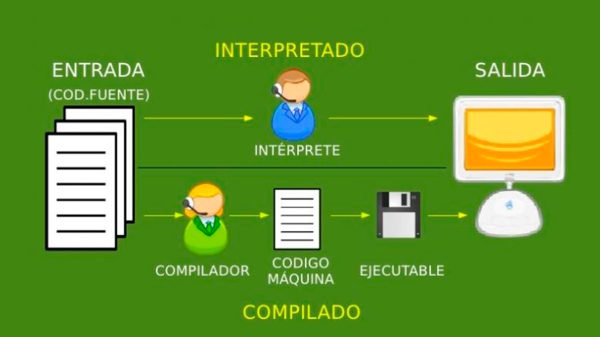
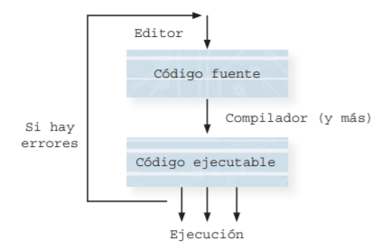

Funcionamiento de los lenguajes de programación
La CPU (cerebro de nuestro ordenador) sólo entiende el lenguaje máquina. Este, para cada máquina concreta, está compuesto por instrucciones en formato binario (0 ó 1).
El programador, para hacer esta tarea más sencilla y productiva, emplea lenguajes de programación específicos para construir un programa informático. Dicho programa se denomina código o programa fuente (no entendible por la máquina), al cual es necesario realizarle un proceso de traducción para convertir dicho programa a otro lenguaje que sí pueda ser entendido por la CPU en la que vamos a trabajar.
Esta traducción o conversión se puede hacer de dos formas distintas, que se denominan interpretación o compilación. Por tanto, existen dos programas o aplicaciones encargadas de realizar cada tipo de traducción, estos son, los intérpretes y los compiladores.

Intérpretes
Un intérprete traduce un programa escrito en un lenguaje de programación de alto nivel, instrucción a instrucción o sentencia a sentencia de una forma secuencial, es decir, cada instrucción es traducida una vez traducida la instrucción anterior, así traducción y ejecución se realizan conjuntamente.
La principal ventaja de esta forma de trabajar es que la ejecución es inmediata, así pueden corregirse posibles errores que vayan surgiendo durante el proceso y continuar a partir de ese punto.
Ejemplos de lenguajes interpretados son: JavaScript, Perl, PHP, Pyton, Lisp, Scheme, R, HTML.
Compiladores
Un compilador es un programa que a partir del todo código fuente genera lo que se llama el código objeto en lenguaje máquina. Así, este proceso lo realiza en dos fases independientes: la primera traduciendo completamente el programa fuente a código máquina y la segunda ejecutando dicho código máquina.
El proceso de compilación requiere más tiempo que en un intérprete, sin embargo, una vez traducido, la ejecución es más rápida al trabajar directamente con el código máquina (unos 1 y ceros 0).
Ejemplos de lenguajes compilados son: C, C++, C#, COBOL, Delphi, Fortran, Pascal.
Es muy probable que un programa que se compila y se ejecuta por primera vez tenga errores de compilación. También es probable que, después de un tiempo de ejecución, el programa tenga errores lógicos de ejecución; en este caso, se vuelve a la edición del código fuente inicial, con el fin de corregir los errores.

Para la mayoría de los lenguajes hay herramientas completas (IDE's - Integrated Development Environment - entorno de desarrollo integrado) que permiten en ambientes amigables la edición y la realización de todos los pasos hasta la construcción del ejecutable de una manera implícita (lo veremos cuando empecemos a trabajar con Java durante los próximos días).